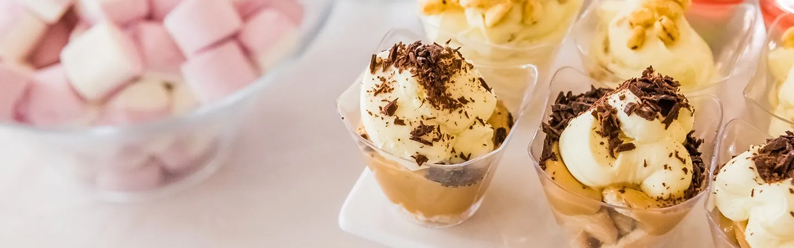

Galeria
Sala, kuchnia i słodkie stoły. Zdjęcia z naszego domu weselnego.
Pokazano 25 zdjęć

Sala, kuchnia i słodkie stoły. Zdjęcia z naszego domu weselnego.
Pokazano 25 zdjęć
Przyjmujemy rezerwacje na kolejne sezony. Zadzwoń albo napisz, oddzwonimy.